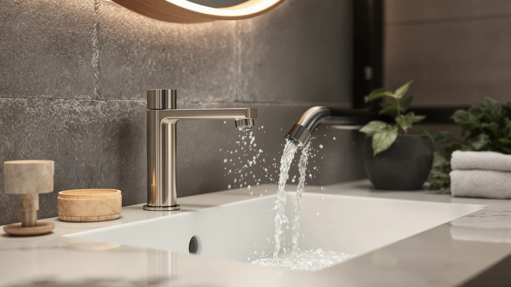

How to Clean Brushed Nickel Bathroom Faucets: Complete Guide (2026)
Prices and picks verified as of October 2026. Independent, reader-supported reviews.


Things to Know Before You Buy
- Brushed nickel has a directional grain. Wipe and dry along the brushed lines, not across them, or the cleaning process itself leaves streaks that catch the light.
- Diluted vinegar only, and only for a few minutes. A 1:1 mix of water and white vinegar lifts hard water deposits in 5 to 10 minutes; a longer, undiluted soak dulls the coating instead.
- Ammonia and abrasives do more damage than grime ever will. Glass cleaners with ammonia and anything labeled scouring strip the microscopic texture that makes brushed nickel look matte rather than shiny.
- A weak stream is usually the aerator, not the faucet. Mineral grit collects in the screen at the spout tip long before the valve itself wears out.
If you want to know how to clean brushed nickel bathroom faucets without turning that soft matte finish patchy, the short answer is dish soap for daily grime, diluted vinegar for mineral spots, and a dry cloth that always follows the brushed grain. The grooved texture that gives brushed nickel its low-glare look also catches soap film, toothpaste splatter, and hard water residue more readily than a polished faucet does, and scrubbing across those grooves instead of along them is what usually causes the streaks homeowners complain about.
The full routine below breaks into five steps: a soap wash to lift everyday grime, a vinegar treatment for hard water deposits, a baking soda scrub for anything the vinegar leaves behind, a rinse that flushes the aerator, and a final buff along the grain. Budget about 20 minutes and under $10 in supplies you likely already keep under the sink. Skip anything labeled ammonia-based or abrasive, since both strip the micro-grooves that make brushed nickel look brushed in the first place, and you'll spend more replacing the faucet than you would have spent cleaning it correctly the first time.
What You'll Need
- Supplies: mild dish soap, white vinegar, and baking soda
- Tools: a microfiber cloth and a soft-bristled brush
Step 1: Rinse and Wipe Down Everyday Grime
Start by running warm water over the entire fixture to loosen loose dust, toothpaste flecks, and hair product residue before they grind into the grooves during scrubbing. Add two or three drops of mild dish soap to a damp microfiber cloth and wipe every surface of the faucet, moving in long strokes that follow the brushed lines rather than small circles. Circular motions cut across the texture and leave the crosswise streaks people usually blame on the finish itself rather than their own technique.
Spend extra time at the seam where the base meets the countertop and in the grooves around the handle, since soap film and skin oils settle there first and harden into a dull haze faster than anywhere else on the faucet. Rinse the cloth and go over the whole surface a second time with clean water only, so leftover soap doesn't dry into the exact streaky film you're trying to prevent.
Step 2: Spot-Treat Hard Water Deposits With Diluted Vinegar
Hard water leaves calcium and lime deposits that dish soap can't touch, but brushed nickel's coating reacts to acid faster than chrome does, so skip the full-strength vinegar soak that works on tougher finishes. Mix equal parts white vinegar and warm water in a small bowl, soak a rag in the solution, and wrap it snugly around the crusted rings at the base and spout. Set a timer for 5 to 10 minutes rather than guessing, since that window loosens mineral bonds without giving the acid enough contact time to dull the finish.
For a faucet that hasn't been cleaned in several months, repeat the wrap once with a fresh batch of solution instead of leaving the first one on longer. Rinse between applications so the acid keeps working on fresh deposits instead of sitting inert against residue it already broke down. If the handles have their own buildup around the base, treat them the same way rather than skipping straight to the spout.
Step 3: Scrub Stubborn Buildup With a Soft Brush and Baking Soda
Once the vinegar has softened what it's going to soften, a soft-bristled brush gets into the seams around the handle base and spout collar that a cloth can't reach. Scrub in short strokes that follow the brushed lines, using light pressure, since brushed nickel's coating scratches about as easily as chrome and an aggressive scrub can leave marks the grain won't hide forever.
If a crust remains after the brush pass, mix baking soda with a few drops of water into a thick paste and work it into the spot with the same brush, still moving with the grain instead of against it. This adds a little extra abrasion without the risk that comes with steel wool or scouring powder, both of which strip the microscopic grooves that give brushed nickel its matte look. While you're in there, unscrew the aerator at the spout tip and drop it into the leftover vinegar solution for 5 to 10 minutes if the water flow has felt weak or uneven lately.
Step 4: Rinse the Faucet and Flush the Aerator
Turn the water on and let it run over the base, handles, and spout for a full 30 seconds, cycling the handles through their range so water reaches the seams you just scrubbed. This clears out mineral grit before it has a chance to sit against the finish and cause fine scratches over time, which matters more on a textured surface than a smooth one.
Reattach the aerator you set aside and run the water once more to confirm it comes out straight and full rather than sputtering or spraying sideways. If the stream still looks weak after reassembly, the threads probably aren't seated correctly rather than the cleaning having failed, so give the aerator a quarter turn and try again.
Step 5: Dry and Buff Along the Grain for a Streak-Free Finish
Brushed nickel hides fingerprints better than polished chrome, but it still streaks if you dry it the wrong way or skip drying altogether. Wipe every surface immediately with a clean, dry microfiber cloth, working in long strokes along the brushed lines rather than the small circles you'd use on a mirror. That direction matters: strokes against the grain push water into the grooves instead of lifting it out, which is exactly what creates the streaks people assume are a defect in the finish.
This last 30-second pass is what separates a faucet that looks newly cleaned from one that looks the same as before. Skip it, and the minerals you just spent several minutes dissolving will simply redeposit as the water evaporates on its own schedule. Repeat the full routine monthly if you have hard water, or every six to eight weeks otherwise, and a quick dry wipe after each use will stretch that interval even further.
Common Mistakes to Avoid
The biggest mistake is treating brushed nickel like a tougher finish and leaving undiluted vinegar on it for 15 or 20 minutes. That timeline works on some chrome fixtures, but brushed nickel's coating reacts to acid faster, and a long undiluted soak dulls the texture instead of safely lifting mineral deposits. Stick to the 1:1 water and vinegar ratio and the 5 to 10 minute window no matter how stubborn the buildup looks.
Scrubbing across the grain instead of along it causes almost as much trouble. Circular motions and side-to-side pressure cut against the microscopic grooves that give brushed nickel its signature low-glare look, leaving crosswise scratches and streaks that catch light from certain angles. Match your stroke direction to the brushed lines during both the scrubbing and the final dry.
Ammonia-based glass cleaners are a third habit worth dropping. Ammonia strips the texture on brushed nickel faster than almost any other common household cleaner, turning an even matte finish patchy within a handful of uses. Dish soap, diluted vinegar, and a baking soda paste handle everything a brushed nickel bathroom faucet needs.
Finally, people ignore the aerator and assume low water pressure is a plumbing problem. The screen at the spout tip is the first place mineral grit collects, and a sputtering or sideways stream usually clears up the moment that screen gets its own short vinegar soak instead of a service call.
Our Top Picks
If your current faucet has pitted, corroded, or dulled past what cleaning can fix, these three replacements hold up well to the same brushed nickel cleaning routine above.

Editor's Pick
Greenspring Touchless Bathroom Sink Faucet
Greenspring's touchless sensor keeps hands off the brushed nickel finish entirely, which means fewer fingerprints and less soap film to clean in the first place.
$60.99
Check Price on Amazon
Best Value
2 Pack Brushed Nickel Waterfall
At $81.69 for two complete faucets, this widespread waterfall pair covers two sinks for roughly the price of one premium single-hole faucet, with a wide spout designed to cut down on splashing.
$81.69
Check Price on Amazon
Premium Choice
WOWOW Bathroom Faucet 1 Handle
WOWOW builds this faucet from 304 stainless steel under the brushed nickel coating, with a pop-up drain assembly included, so you get hardware that resists corrosion longer than painted or plated alternatives at a similar price.
$39.99
Check Price on AmazonWhat is the best way to clean a brushed nickel bathroom faucet?
Wipe the faucet with warm water and a few drops of dish soap on a microfiber cloth, moving along the brushed grain, then treat any hard water spots with a 5 to 10 minute wrap of diluted white vinegar.
Can you use vinegar on brushed nickel faucets?
Yes, but only diluted.
Frequently Asked Questions
What is the best way to clean a brushed nickel bathroom faucet?
Can you use vinegar on brushed nickel faucets?
How do you remove water spots from brushed nickel without damaging the finish?
How often should you clean a brushed nickel bathroom faucet?
Why does my brushed nickel faucet look streaky after I clean it?
Verdict
Knowing how to clean brushed nickel bathroom faucets comes down to working with the texture instead of against it: dish soap for daily grime, a 5 to 10 minute soak in diluted vinegar for hard water deposits, and a dry buff that always follows the brushed grain. That coating reacts to acid faster than polished chrome does, so the undiluted vinegar soak and longer contact times that work fine on tougher finishes will dull brushed nickel instead of safely loosening mineral buildup. Budget about 20 minutes for the full routine, run it monthly if your water is hard, and don't skip the aerator soak once the stream starts sputtering. The habit that matters most is directional: wipe and dry with the grain, never across it, and the finish stays matte instead of streaky. If your current fixture has pitted or corroded past what cleaning can fix, the Greenspring touchless faucet from our picks above swaps it out for a sensor-activated option that collects less soap film to begin with.